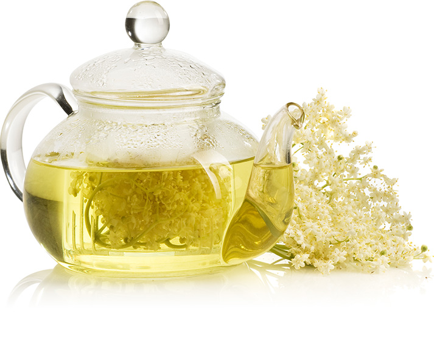
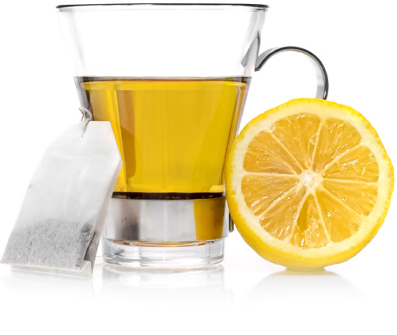

Loading...

分布于中国、俄罗斯和朝鲜；在中国分布于辽宁东部、吉林东半部和黑龙江东部。一般生于海拔数百米的落叶阔叶林或针叶阔叶混交林下。
人参（拉丁学名：Panax ginseng C. A. Mey.）是五加科、人参属多年生草本植物。高达60厘米；根茎短，主根纺锤形；掌状复叶3~6轮生茎顶，叶柄长3~8厘米，无毛；小叶3~5，膜质，中央小叶椭圆形或长圆状椭圆形，长8~12厘米，侧生小叶卵形或菱状卵形，长2~4厘米，先端长渐尖，基部宽楔形，具细密锯齿，齿具刺尖，上面疏被刺毛，下面无毛，侧脉5~6对；小叶柄长0.5~2.5厘米
人参的肉质根为强壮滋补药，适用于调整血压、恢复心脏功能、神经衰弱及身体虚弱等症，也有祛痰、健胃、利尿、兴奋等功效。
适合以下人群食用人参： - 体虚人群：人参具有补气血、益精髓的作用，适合身体虚弱、免疫力低下的人群，如老年人、久病体虚者等。 - 疲劳人群：人参可以帮助缓解疲劳，提高身体的抗压能力，适合工作压力大、经常熬夜的人群。 - 术后康复人群：人参有助于促进身体的恢复和愈合，适合手术后的病人进行调养。
We want our teas to have more than just great flavor. Great tea should also have superb health properties and be high in quality.
We also treasure our community and our environment. Therefore, we put forth our best efforts to practice sustainable and green activities for the sake of our community and natural environment.
We all just want to be…happy. We all want to be healthy. We all want a feeling of belonging and interaction. Tea culture makes it all possible. We want to make a difference through sharing our love for tea and tea culture.

Irish Breakfast is not English Breakfast that's been dyed green and sold by a leprechaun. English Breakfast is a blend of black teas that's meant to brew up strong and black. Irish Breakfast is the same thing, but perhaps even more strong and rich.
Just as you’d want to capture every nuance of the flavor of a phenomenal glass of wine by using the best vessel you have, the same can be said about premium, high-quality loose leaf tea. It's always a good idea to prepare your tea beautifully.
What is Black Tea exactly? Read up on our ten bite-sized chunks of tea facts and you’ll be amazed at how little you knew before. First, Black tea is called black tea because of the oxidization during processing, which makes the leaves black.
Oolong tea is in the media a lot because people are fond of calling them diet teas. While green and black teas may become bitter if you let them steep too long, a lot of oolongs are more forgiving. Today we’re focussing on three popular oolongs.
Subscribe to the Tea company mailing list to receive updates on new arrivals, special offers and other discount information.
The tea from the Tea Company is truly unique. This has to be tea at it`s finest.
Your Rooibos really is the best I have ever tasted! This is one of my favourite teas.
Absolutely love the Oolong and the Earl Grey is the best we have had from anywhere.